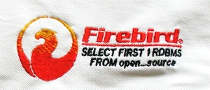

Программное обеспечение SuperMarket создано и работает согласно
концепции Клиент-Сервер, в качестве базы данных используется реляционная СУБД
Firebird® SQL Server, которая признана одним из самых надежных и быстрых
бесплатных СУБД.
В программном обеспечении SuperMarket
реализован механизм транзакций, в рамках которых выполняются инструкции языка
SQL.
СУБД Firebird® SQL Server может работать с
формированием зеркальной копии (shadow) базы данных, а также в архитектурах
как SuperServer так и Classic, причем последний дает возможность запускать
каждого из клиентов разными процессами, что позволяет эффективно использовать
быстродействие многоядерных процессоров.
В случае использования выделенного сервера на нем
может быть установлена не только ОС Windows, но и свободно распространяемая ОС
Linux.
Все вышеперечисленные факторы выгодно отличают
программное обеспечение SuperMarket от устаревших приложений, созданных на
основе баз данных FoxPro, Dbase, Paradox, Access, и делает его чрезвычайно
надежным, отказоустойчивым и экономичным инструментом учета Вашего
бизнеса.
Для данного программного обеспечения используется
Firebird 1.5.х